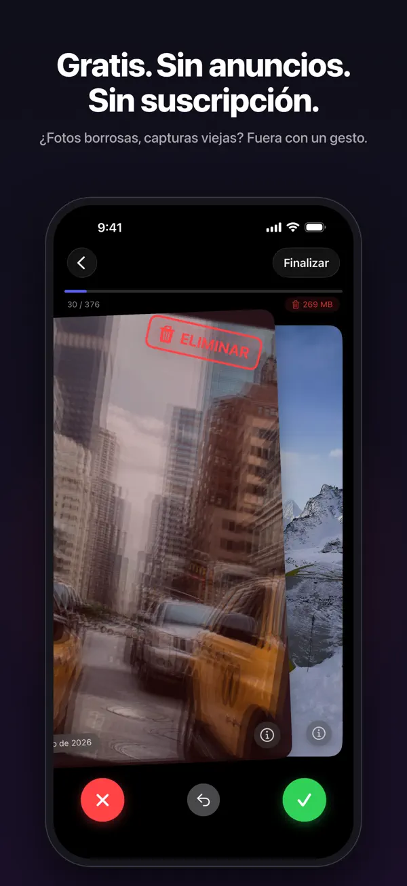
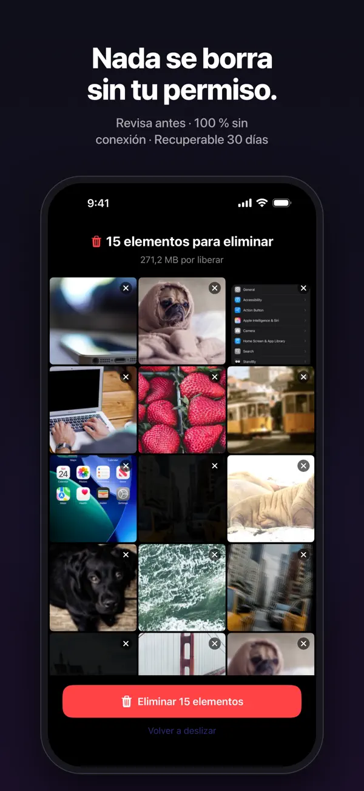

Desliza tus fotos.
Libera tu iPhone.
Izquierda para borrar, derecha para conservar. Gratis, sin anuncios, sin suscripción, y tus fotos se quedan en tu teléfono.
Descargar en el App Store



Izquierda para borrar, derecha para conservar. Gratis, sin anuncios, sin suscripción, y tus fotos se quedan en tu teléfono.
Descargar en el App Store

